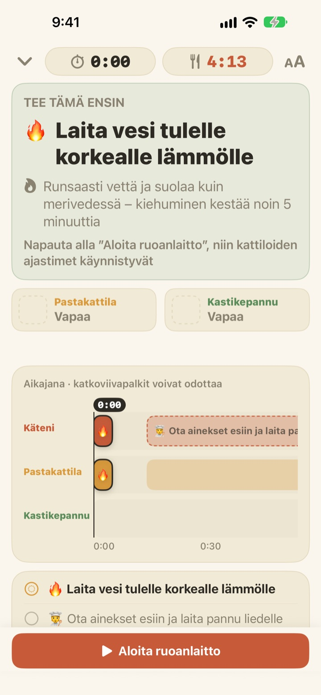
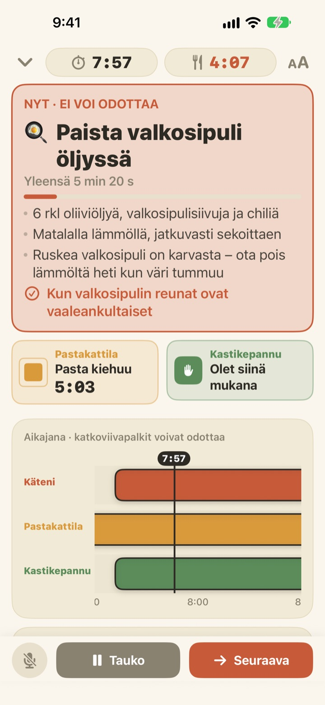
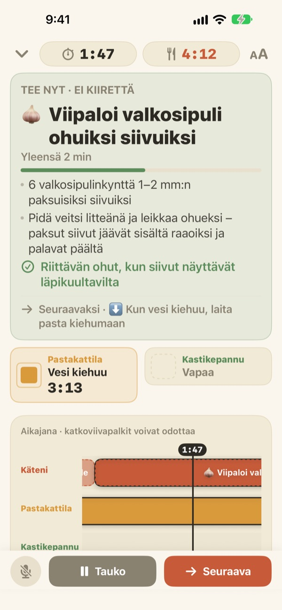
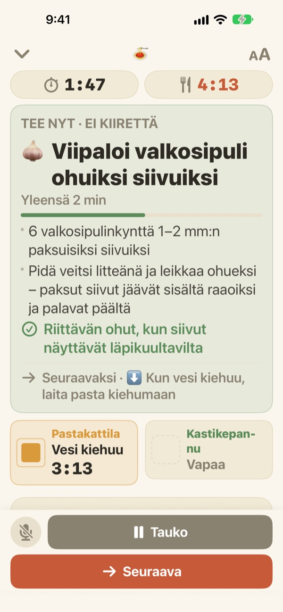

Pasta kiehuu.
Kastike valmistuu sillä välin.
Kun kaksi kattilaa etenee eri tahtiin, Geusaie näyttää isolla sen yhden asian, joka käsiesi pitää tehdä juuri nyt. Kastike ajoitetaan takaperin siitä hetkestä, kun pasta kaadetaan siivilään.
Kaikki ominaisuudet ovat ilmaisia. Tiliä ei tarvita.

Kokeile itse
Valmista annos aglio e oliota 20-kertaisella nopeudella. Napauta Aloita ruoanlaitto ja sitten Seuraava aina, kun olisit saanut tehtävän tehtyä. Katso, miten kortti muuttuu, kun on aika kaataa pasta siivilään.
Kolme ajastinta käynnissä, ja pasta silti ylikypsää?
Yksi ajastin pastalle, toinen kastikkeelle ja valkosipuli päässä, ja kohta et enää tiedä, mikä tulee ensin. Leikkaat juuri, kun pasta pitäisi kaataa siivilään, ja kastike valmistuu kaksi minuuttia myöhässä. Geusaie tuntee reseptin muodossa ”ensin tämä, sitten tuo” ja kertoo vain sen yhden asian, joka pitää tehdä nyt.
Mikä ei voi odottaa, muuttuu punaiseksi
Pastan siivilöinti, palamaisillaan oleva valkosipuli: kun tehtävä pilaisi ruoan myöhästyessään, kortti muuttuu terrakotan väriseksi ja pyytää jättämään pilkkomisen hetkeksi.
Kun kattila on valmis, saat ilmoituksen, vaikka et katsoisi näyttöä, ja siinä lukee, mitä tehdä heti.

Pilko, kun kädet ovat vapaina
Valkosipulin viipalointi, juuston raastaminen, mittaaminen: millään näistä ei ole kiinteää aikaa, joten sekunteja ei lasketa. Palkki täyttyy, kun kätesi ovat vapaina, pysähtyy, kun kattila kutsuu, ja jatkuu siitä, mihin jäit.
Laitatko levyn päälle kolme minuuttia myöhässä? Kaikki sen jälkeen siirtyy kolme minuuttia. Aikataulu lasketaan joka kerta uudelleen sen mukaan, mitä oikeasti teit.

Nojaa tasolle, jatka äänellä
Neljä tekstikokoa, jotta luet tekstin parin askeleen päästä, eikä näyttö sammu ruokaa laittaessa.
Kädet märkinä? Sano seuraava, niin sovellus siirtyy seuraavaan tehtävään ilman kosketusta.

Kolme askelta päivälliseen
- 1
Valitse ruoka
Näet suunnilleen, kauanko se vie ja montako kattilaa tarvitset.
- 2
Napauta Aloita ruoanlaitto
Ensin näet ensimmäisen tehtävän, ja kattiloiden kellot käynnistyvät napautuksesta.
- 3
Valmista? Seuraava.
Napauta painiketta tai sano ”seuraava”, niin seuraava tehtävä tulee esiin.
Väri kertoo kiireen
- Vihreä
- Esivalmistelu. Ei kiirettä.
- Sinapinkeltainen
- Kattila tarvitsee sinua. Tee se nyt, mutta rauhassa.
- Terrakotta
- Jos odotat, pasta ylikypsyy tai valkosipuli palaa. Nyt.
- Kattilaruudut
- Kutistuva neliö on jäljellä oleva aika. Kattiloiden aikaa ei koskaan piiloteta.
Aikajanalla katkoviivalla piirretyt palkit ovat tehtäviä, jotka voivat odottaa.
Kaikki ominaisuudet ovat ilmaisia
Ilmainen
- Molemmat reseptit
- Oma ajastin jokaiselle kattilalle ja koko aikajana
- Ilmoitus, kun kattila on valmis
- ”Seuraava” äänellä
- Neljä tekstikokoa
- Avaa resepti Sirillä tai Pikakomennoilla
Tue kehittäjää (vapaaehtoinen)
- Jos sovellus auttaa, voit antaa pienen tipin asetuksista
- Tippi ei avaa mitään. Ilman sitäkin kaikki ominaisuudet ovat käytössäsi
Kertamaksuja, ei tilausta.
Ei tiliä, ei mainoksia, ja toimii ilman internetiä.
Usein kysyttyä
Sanon ”seuraava”, mutta mitään ei tapahdu.
Mikrofonipainike vasemmassa alakulmassa on punainen, kun sovellus kuuntelee, ja harmaa, kun se on pois päältä. Salli ensimmäisellä kerralla sekä mikrofoni että puheentunnistus. Jos kielsit ne, voit ottaa ne uudelleen käyttöön kohdassa Asetukset > Geusaie. Sovellus kuuntelee sanaa, joka lukee sen Seuraava-painikkeessa. Hyvin meluisassa keittiössä napauta vain Seuraava.
Kattila valmistui, mutta en saanut ilmoitusta.
Tarkista, että ilmoitukset ovat päällä kohdassa Asetukset > Ilmoitukset > Geusaie. Keskittyminen voi hiljentää ne. Ilmoituksia tulee vain, kun kattila on valmis; esivalmistelut eivät koskaan hoputa sinua.
Mitä aikataululle käy, jos aloitan myöhässä?
Se lasketaan uudelleen sen mukaan, mitä oikeasti teit. Kun laitat levyn päälle kolme minuuttia myöhemmin, kaikki sen jälkeen siirtyy kolme minuuttia, ja kastike ajoitetaan edelleen takaperin siitä, kun pasta on valmis.
Teksti on liian pientä.
Napauta ruoanlaittonäkymän oikeasta yläkulmasta tekstikoon painiketta ja valitse Normaali, Suuri, Suurempi tai Suurin. Valintasi muistetaan.
Sammuuko näyttö ruokaa laittaessa?
Ei. Näyttö pysyy päällä, kun laitat ruokaa, joten sinun ei tarvitse koskea siihen märin käsin.
Mitä ruokia sovelluksessa on?
Aglio e olio (noin 15 minuuttia, 2 kattilaa) ja tomaatti-kermapasta (noin 20 minuuttia, 2 kattilaa), jotka perustuvat Serious Eatsin, Gimme Some Ovenin, RecipeTin Eatsin ja The Burnt Butter Tablen resepteihin. Mikä tahansa ruoka, jossa kaksi kattilaa on käynnissä yhtä aikaa, sopii hyvin, joten kerro, minkä reseptin haluaisit.
Tallennetaanko ääneni?
Ei. Sovellus kuuntelee vain sanaa ”seuraava” eikä tallenna tai säilytä ääntä. Jos laite tukee sitä, puheentunnistus tapahtuu laitteessa. Henkilötietoja ei kerätä.
Voinko avata sen Sirillä?
Kyllä. Valitse ruoka Sirissä tai Pikakomennot-apissa, niin sen ruoanlaittonäkymä aukeaa heti. Kellot käynnistyvät, kun olet valmis laittamaan veden kiehumaan ja napautat Aloita ruoanlaitto.
Millä laitteilla se toimii?
iPhonella ja iPadilla, joissa on iOS 17 tai uudempi. Tiliä tai internetyhteyttä ei tarvita.
Miten ilmoitan ongelmasta tai ehdotan reseptiä?
Sovelluksen kohdasta Asetukset > Lähetä palautetta tai sähköpostilla alla olevaan osoitteeseen. Kerro laitteen malli ja iOS-versio, niin pääsemme asiaan nopeammin. Vastaamme yleensä muutamassa päivässä.
Jäikö jokin jumiin, huomasitko jotain outoa tai onko mielessä resepti? Kirjoita osoitteeseen leeo@kakao.com.